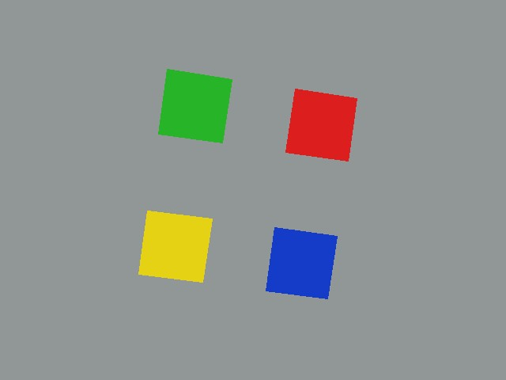
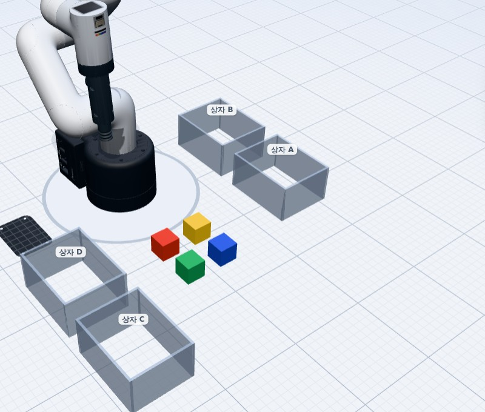
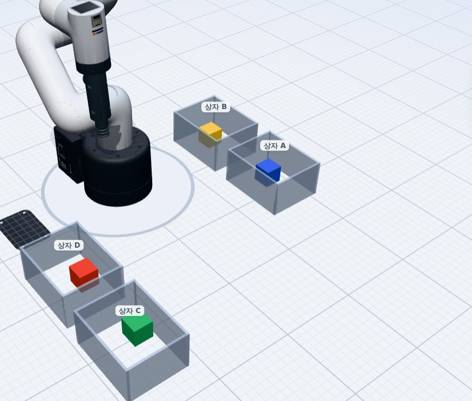

<!doctype html>
<html lang="ko">
<head>
<meta charset="utf-8" />
<meta name="viewport" content="width=device-width, initial-scale=1" />
<title>시안 · 선생님이 이끄는 수업 (로봇 실습 7-4)</title>
<style>
  @font-face { font-family: Pretendard; font-weight: 400; src: url("../../../web-typescript/src/app/fonts/Pretendard-Regular.subset.woff2") format("woff2"); }
  @font-face { font-family: Pretendard; font-weight: 500; src: url("../../../web-typescript/src/app/fonts/Pretendard-Medium.subset.woff2") format("woff2"); }
  @font-face { font-family: Pretendard; font-weight: 600; src: url("../../../web-typescript/src/app/fonts/Pretendard-SemiBold.subset.woff2") format("woff2"); }
  @font-face { font-family: Pretendard; font-weight: 800; src: url("../../../web-typescript/src/app/fonts/Pretendard-Bold.subset.woff2") format("woff2"); }
  :root {
    --ink: #101828; --muted: #475467; --faint: #98a2b3; --line: #e4e7ec; --soft: #f4f6fa; --page: #ffffff;
    --brand: #3454d1; --brand-soft: #eef1fd; --ok: #12a150; --ok-soft: #e7f7ee; --warn: #e8590c; --warn-soft: #fff4ec;
    --help: #d92d20; --help-soft: #fef0ef; --robot: #f08c00; --robot-soft: #fff6e6;
    --rail: #141a24; --rail2: #1c2431; --rail-line: #2b3546; --rail-ink: #e8eef8; --rail-muted: #9aa8bd;
  }
  * { box-sizing: border-box; }
  html, body { margin: 0; height: 100%; }
  body { font-family: Pretendard, "Noto Sans CJK KR", "Apple SD Gothic Neo", "Malgun Gothic", system-ui, sans-serif; color: var(--ink); background: var(--page); word-break: keep-all; -webkit-font-smoothing: antialiased; }
  button { font: inherit; cursor: pointer; }
  img { display: block; }

  /* ---------- both: the two screens side by side ---------- */
  body.both { background: #e9edf3; }
  .bothBar { display: flex; align-items: center; gap: 14px; padding: 14px 22px; background: #fff; border-bottom: 1px solid var(--line); }
  .bothBar h1 { font-size: 18px; margin: 0; }
  .bothBar p { margin: 0; color: var(--muted); font-size: 14px; }
  .bothBar .sp { flex: 1; }
  .bothBar .seg { display: flex; border: 1px solid var(--line); border-radius: 9px; overflow: hidden; }
  .bothBar .seg button { border: 0; background: #fff; padding: 7px 12px; font-size: 13px; color: var(--muted); }
  .bothBar .seg button[aria-pressed="true"] { background: var(--brand); color: #fff; font-weight: 600; }
  .screens { display: flex; gap: 26px; padding: 20px 22px 26px; align-items: flex-start; }
  .screen { display: flex; flex-direction: column; gap: 8px; }
  .screen > b { font-size: 14px; color: var(--muted); font-weight: 600; }
  .screen > b em { font-style: normal; color: var(--ink); }
  .frameBox { position: relative; overflow: hidden; border-radius: 12px; box-shadow: 0 10px 30px rgba(16, 24, 40, .16), 0 0 0 1px rgba(16, 24, 40, .08); background: #fff; }
  .frameBox iframe { border: 0; transform-origin: 0 0; position: absolute; left: 0; top: 0; }

  /* ---------- teacher (presenter view, 1920 x 1080) ---------- */
  body.teacher { width: 1920px; height: 1080px; overflow: hidden; background: #f3f5f9; }
  .tHead { height: 72px; display: flex; align-items: center; gap: 22px; padding: 0 28px; background: #fff; border-bottom: 1px solid var(--line); }
  .logo { font-weight: 800; letter-spacing: .18em; color: var(--brand); font-size: 15px; }
  .tHead .unit { font-size: 22px; font-weight: 800; }
  .tHead .unit small { display: block; font-size: 13px; font-weight: 500; color: var(--muted); letter-spacing: 0; }
  .tHead .sp { flex: 1; }
  .pill { display: inline-flex; align-items: center; gap: 8px; padding: 8px 14px; border-radius: 999px; background: var(--soft); font-size: 15px; font-weight: 600; color: var(--muted); }
  .pill b { color: var(--ink); }
  .stopAll { background: var(--help); color: #fff; border: 0; border-radius: 10px; padding: 12px 18px; font-weight: 800; font-size: 16px; }
  .steps { display: grid; grid-template-columns: repeat(6, 1fr); gap: 10px; padding: 14px 28px; background: #fff; border-bottom: 1px solid var(--line); }
  .stepPill { display: flex; align-items: center; gap: 12px; padding: 10px 14px; border-radius: 12px; border: 1.5px solid var(--line); background: #fff; color: var(--faint); text-align: left; }
  .stepPill i { flex: none; width: 30px; height: 30px; border-radius: 50%; display: grid; place-items: center; font-style: normal; font-weight: 800; background: var(--soft); color: var(--faint); font-size: 15px; }
  .stepPill span { display: flex; flex-direction: column; line-height: 1.25; }
  .stepPill span b { font-size: 16px; }
  .stepPill span small { font-size: 12.5px; }
  .stepPill[data-state="done"] { color: var(--muted); }
  .stepPill[data-state="done"] i { background: var(--ok-soft); color: var(--ok); }
  .stepPill[data-state="now"] { border-color: var(--brand); background: var(--brand-soft); color: var(--ink); box-shadow: 0 0 0 3px rgba(52, 84, 209, .15); }
  .stepPill[data-state="now"] i { background: var(--brand); color: #fff; }
  .tBody { display: grid; grid-template-columns: 1fr 560px; height: calc(1080px - 72px - 87px); }
  .stage { position: relative; padding: 26px 34px 26px 28px; display: flex; flex-direction: column; min-height: 0; }
  .stageTag { position: absolute; top: 12px; left: 28px; font-size: 12.5px; font-weight: 700; color: var(--brand); letter-spacing: .02em; }
  .stageCard { flex: 1; min-height: 0; background: #fff; border-radius: 22px; box-shadow: 0 1px 2px rgba(16,24,40,.06), 0 0 0 1px var(--line); padding: 34px 40px 30px; display: flex; flex-direction: column; gap: 18px; margin-top: 10px; }
  .stageCard .kick { font-size: 20px; font-weight: 700; color: var(--brand); }
  .stageCard h2 { margin: 0; font-size: 50px; line-height: 1.2; letter-spacing: -.01em; }
  .stageCard .say { margin: 0; font-size: 28px; line-height: 1.45; color: var(--muted); font-weight: 500; }
  .stageVis { flex: 1; min-height: 0; display: flex; gap: 22px; align-items: stretch; }
  .stageDo { display: flex; align-items: center; gap: 14px; padding: 16px 20px; border-radius: 14px; background: var(--soft); font-size: 22px; font-weight: 600; }
  .stageDo em { font-style: normal; padding: 4px 12px; border-radius: 8px; background: var(--brand); color: #fff; font-size: 16px; font-weight: 700; }

  .rail { background: var(--rail); color: var(--rail-ink); display: flex; flex-direction: column; min-height: 0; }
  .railHead { display: flex; align-items: center; gap: 10px; padding: 16px 22px; border-bottom: 1px solid var(--rail-line); font-size: 14px; color: var(--rail-muted); }
  .railHead b { color: #fff; font-size: 15px; }
  .railHead .lock { margin-left: auto; padding: 4px 10px; border-radius: 999px; background: #2b3a55; color: #b9c7ff; font-size: 12.5px; font-weight: 700; }
  .railBody { flex: 1; min-height: 0; overflow: auto; padding: 16px 22px; display: flex; flex-direction: column; gap: 16px; }
  .rsec { background: var(--rail2); border: 1px solid var(--rail-line); border-radius: 14px; padding: 14px 16px; }
  .rsec h3 { margin: 0 0 8px; font-size: 13px; color: var(--rail-muted); font-weight: 700; letter-spacing: .02em; }
  .rsec p { margin: 0; font-size: 18px; line-height: 1.5; }
  .rsec p + p { margin-top: 6px; }
  .rsec .ans { margin-top: 10px; padding: 10px 12px; border-radius: 10px; background: #12301f; color: #8be3ac; font-size: 16px; line-height: 1.45; }
  .rsec .ansBtn { margin-top: 10px; border: 1px dashed #4a5a74; background: transparent; color: var(--rail-muted); border-radius: 10px; padding: 8px 12px; font-size: 14px; }
  .meter { display: flex; align-items: baseline; gap: 10px; }
  .meter b { font-size: 40px; line-height: 1; }
  .meter span { color: var(--rail-muted); font-size: 16px; }
  .bar { height: 12px; border-radius: 99px; background: #2b3546; overflow: hidden; display: flex; margin: 10px 0 12px; }
  .bar i { display: block; height: 100%; }
  .legend { display: flex; gap: 14px; font-size: 14px; color: var(--rail-muted); }
  .legend span::before { content: ""; display: inline-block; width: 10px; height: 10px; border-radius: 3px; margin-right: 6px; vertical-align: -1px; background: var(--c); }
  .chips { display: flex; flex-wrap: wrap; gap: 6px; margin-top: 10px; }
  .chip { padding: 5px 10px; border-radius: 8px; font-size: 14px; font-weight: 700; background: #3a1f1f; color: #ffb4ab; }
  .chip.me { outline: 2px solid #ffb4ab; }
  .groups { display: grid; grid-template-columns: repeat(3, 1fr); gap: 8px; }
  .grp { border-radius: 10px; padding: 8px 10px; background: #232d3c; font-size: 13px; color: var(--rail-muted); }
  .grp b { display: block; color: #fff; font-size: 15px; }
  .grp[data-s="ready"] { background: #2b2a1c; }
  .grp[data-s="ready"] b { color: #ffd479; }
  .grp[data-s="run"] { background: #1d2a44; }
  .grp[data-s="run"] b { color: #9db4ff; }
  .grp[data-s="done"] { background: #12301f; }
  .grp[data-s="done"] b { color: #8be3ac; }
  .railFoot { padding: 16px 22px 20px; border-top: 1px solid var(--rail-line); display: flex; flex-direction: column; gap: 10px; }
  .nextBtn { border: 0; border-radius: 14px; padding: 18px 20px; background: #4f6ef7; color: #fff; font-size: 21px; font-weight: 800; text-align: left; display: flex; align-items: center; justify-content: space-between; }
  .nextBtn small { display: block; font-size: 13px; font-weight: 600; opacity: .85; }
  .nextBtn[disabled] { opacity: .45; cursor: default; }
  .gateBtn { border: 0; border-radius: 14px; padding: 16px 20px; background: var(--robot); color: #1a1100; font-size: 19px; font-weight: 800; }
  .gateBtn[aria-pressed="true"] { background: #2a3a26; color: #8be3ac; }
  .subBtns { display: flex; gap: 8px; }
  .subBtns button { flex: 1; border: 1px solid var(--rail-line); background: transparent; color: var(--rail-ink); border-radius: 10px; padding: 10px; font-size: 14px; font-weight: 600; }

  /* shared visuals */
  .photo { position: relative; border-radius: 16px; overflow: hidden; background: #8f8f8a; aspect-ratio: 4 / 3; height: 100%; max-height: 100%; }
  .photo img { width: 100%; height: 100%; object-fit: cover; }
  .photo.fitW { height: auto; width: 100%; }
  .photo .tag { position: absolute; left: 12px; top: 12px; padding: 5px 10px; border-radius: 8px; background: rgba(16, 24, 40, .72); color: #fff; font-size: 14px; font-weight: 700; }
  .mark { position: absolute; width: 17%; aspect-ratio: 1; border-radius: 50%; border: 4px solid #fff; box-shadow: 0 0 0 3px rgba(16,24,40,.35); transform: translate(-50%, -50%); pointer-events: none; }
  .mark span { position: absolute; left: 50%; top: 100%; transform: translate(-50%, 6px); white-space: nowrap; padding: 3px 9px; border-radius: 7px; background: #fff; font-size: 14px; font-weight: 800; }
  .scene { border-radius: 16px; overflow: hidden; background: #eef1f5; }
  .scene img { width: 100%; height: 100%; object-fit: cover; }
  .tally { display: flex; flex-direction: column; gap: 14px; justify-content: center; flex: 1; }
  .tally .row { display: grid; grid-template-columns: 260px 1fr 70px; align-items: center; gap: 14px; font-size: 24px; font-weight: 600; }
  .tally .row .tb { height: 26px; border-radius: 8px; background: var(--soft); overflow: hidden; }
  .tally .row .tb i { display: block; height: 100%; background: var(--brand); border-radius: 8px; }
  .tally .row b { text-align: right; }
  .flow { display: grid; grid-template-columns: repeat(4, 1fr); gap: 16px; flex: 1; align-items: stretch; }
  .flow > div { border-radius: 18px; background: var(--soft); padding: 22px; display: flex; flex-direction: column; gap: 10px; }
  .flow > div i { font-style: normal; width: 44px; height: 44px; border-radius: 50%; background: var(--brand); color: #fff; display: grid; place-items: center; font-weight: 800; font-size: 22px; }
  .flow > div b { font-size: 26px; }
  .flow > div span { font-size: 18px; color: var(--muted); line-height: 1.45; }
  .board { border-radius: 16px; background: #fff; border: 1.5px solid var(--line); position: relative; height: 100%; min-height: 0; }
  .board svg { width: 100%; height: 100%; display: block; }

  /* ---------- student (1366 x 768) ---------- */
  body.student { width: 1366px; height: 768px; overflow: hidden; background: #f3f5f9; display: flex; flex-direction: column; }
  .sHead { height: 64px; flex: none; display: flex; align-items: center; gap: 16px; padding: 0 22px; background: #fff; border-bottom: 1px solid var(--line); }
  .with { display: inline-flex; align-items: center; gap: 8px; padding: 7px 12px; border-radius: 999px; background: var(--brand-soft); color: var(--brand); font-weight: 800; font-size: 14px; }
  .with i { width: 8px; height: 8px; border-radius: 50%; background: var(--brand); box-shadow: 0 0 0 4px rgba(52,84,209,.2); }
  .sHead .unit { font-weight: 800; font-size: 17px; }
  .dots { display: flex; gap: 6px; align-items: center; margin-left: 8px; }
  .dots button { width: 30px; height: 30px; border-radius: 50%; border: 1.5px solid var(--line); background: #fff; color: var(--faint); font-weight: 800; font-size: 13px; padding: 0; }
  .dots button[data-s="done"] { background: var(--ok-soft); color: var(--ok); border-color: transparent; }
  .dots button[data-s="now"] { background: var(--brand); color: #fff; border-color: var(--brand); }
  .dots button[disabled] { cursor: default; opacity: .55; }
  .sHead .sp { flex: 1; }
  .who { display: flex; gap: 6px; }
  .who span { padding: 6px 11px; border-radius: 8px; background: var(--soft); font-size: 14px; font-weight: 700; color: var(--muted); }
  .who .robotRole { background: var(--robot-soft); color: #b35900; }
  .sMain { flex: 1; min-height: 0; padding: 18px 22px 0; display: flex; flex-direction: column; gap: 14px; }
  .sTask { display: flex; gap: 16px; align-items: flex-start; }
  .sTask .n { flex: none; width: 46px; height: 46px; border-radius: 14px; background: var(--brand); color: #fff; display: grid; place-items: center; font-size: 22px; font-weight: 800; }
  .sTask h2 { margin: 0; font-size: 28px; line-height: 1.3; }
  .sTask p { margin: 4px 0 0; font-size: 18px; color: var(--muted); line-height: 1.45; }
  .sWork { flex: 1; min-height: 0; display: flex; gap: 18px; }
  .sSide { width: 400px; flex: none; display: flex; flex-direction: column; gap: 12px; }
  .card { background: #fff; border-radius: 16px; box-shadow: 0 0 0 1px var(--line); padding: 16px 18px; }
  .card h4 { margin: 0 0 6px; font-size: 14px; color: var(--muted); }
  .count { font-size: 34px; font-weight: 800; }
  .count small { font-size: 18px; color: var(--muted); font-weight: 600; }
  .choices { display: flex; flex-direction: column; gap: 10px; }
  .choice { display: flex; align-items: center; gap: 12px; padding: 14px 16px; border-radius: 14px; border: 2px solid var(--line); background: #fff; font-size: 19px; font-weight: 700; text-align: left; }
  .choice i { font-style: normal; width: 34px; height: 34px; border-radius: 10px; background: var(--soft); display: grid; place-items: center; font-size: 16px; color: var(--muted); }
  .choice[aria-pressed="true"] { border-color: var(--brand); background: var(--brand-soft); }
  .choice[aria-pressed="true"] i { background: var(--brand); color: #fff; }
  .choice.right { border-color: var(--ok); background: var(--ok-soft); }
  .choice.wrong { border-color: var(--help); background: var(--help-soft); }
  .big { border: 0; border-radius: 16px; padding: 20px 22px; font-size: 22px; font-weight: 800; background: var(--brand); color: #fff; display: flex; align-items: center; justify-content: center; gap: 10px; }
  .big.robotGo { background: var(--robot); color: #1a1100; }
  .big[disabled] { background: #d0d5dd; color: #fff; cursor: default; }
  .check { display: flex; align-items: center; gap: 12px; padding: 12px 14px; border-radius: 12px; border: 1.5px solid var(--line); background: #fff; font-size: 17px; font-weight: 600; text-align: left; width: 100%; }
  .check i { flex: none; width: 26px; height: 26px; border-radius: 7px; border: 2px solid var(--faint); display: grid; place-items: center; font-style: normal; color: #fff; font-size: 15px; }
  .check[aria-pressed="true"] { border-color: var(--ok); background: var(--ok-soft); }
  .check[aria-pressed="true"] i { background: var(--ok); border-color: var(--ok); }
  .note { font-size: 15px; color: var(--muted); line-height: 1.45; }
  .waitRobot { display: flex; flex-direction: column; align-items: center; justify-content: center; gap: 10px; text-align: center; font-size: 19px; color: var(--muted); }
  .waitRobot b { font-size: 26px; color: var(--ink); }
  .nums { display: flex; gap: 8px; }
  .nums button { width: 56px; height: 56px; border-radius: 14px; border: 2px solid var(--line); background: #fff; font-size: 24px; font-weight: 800; }
  .nums button[aria-pressed="true"] { border-color: var(--brand); background: var(--brand-soft); color: var(--brand); }
  .prog { height: 14px; border-radius: 99px; background: var(--soft); overflow: hidden; }
  .prog i { display: block; height: 100%; background: var(--robot); }
  .sFoot { height: 76px; flex: none; margin-top: 14px; display: flex; align-items: center; gap: 16px; padding: 0 22px; background: #fff; border-top: 1px solid var(--line); }
  .state { display: flex; align-items: center; gap: 12px; font-size: 19px; font-weight: 700; }
  .state i { width: 34px; height: 34px; border-radius: 50%; display: grid; place-items: center; font-style: normal; font-weight: 800; }
  .state[data-s="todo"] { color: var(--muted); }
  .state[data-s="todo"] i { background: var(--soft); color: var(--faint); }
  .state[data-s="done"] { color: var(--ok); }
  .state[data-s="done"] i { background: var(--ok); color: #fff; }
  .state small { display: block; font-size: 14px; color: var(--muted); font-weight: 500; }
  .sFoot .sp { flex: 1; }
  .helpBtn { border: 1.5px solid var(--line); background: #fff; border-radius: 12px; padding: 12px 16px; font-size: 17px; font-weight: 700; color: var(--muted); }
  .helpBtn[aria-pressed="true"] { border-color: var(--help); background: var(--help-soft); color: var(--help); }
  .lockNote { font-size: 15px; color: var(--faint); }
  .tapHint { position: absolute; right: 12px; bottom: 12px; padding: 6px 12px; border-radius: 8px; background: rgba(255,255,255,.92); font-size: 15px; font-weight: 700; }
</style>
</head>
<body>
<script>
// ------------------------------------------------------------------ the lesson (one unit, six steps)
const STEPS = [
  { key: 'open', name: '생각 열기', min: 3 },
  { key: 'see', name: '로봇 눈으로 보기', min: 7 },
  { key: 'map', name: '자리 바꾸기', min: 8 },
  { key: 'sim', name: '화면에서 먼저', min: 7 },
  { key: 'real', name: '실물로', min: 10 },
  { key: 'wrap', name: '정리', min: 5 },
];
// The four blocks in the hand camera photo (640 x 480): pixel centre, colour, table position (mm).
const BLOCKS = [
  { c: '초록', hex: '#12a150', u: 246, v: 134, x: 165, y: -75 },
  { c: '노랑', hex: '#e6b800', u: 222, v: 311, x: 165, y: -20 },
  { c: '빨강', hex: '#d92d20', u: 406, v: 158, x: 115, y: -75 },
  { c: '파랑', hex: '#2f5bd3', u: 381, v: 332, x: 115, y: -20 },
];
const CLASS = 24;
const ME = 12;
const MY_GROUP = 3;

const params = new URLSearchParams(location.search);
const view = params.get('view') || 'both';
document.body.className = view;

// ------------------------------------------------------------------ shared state
// In 'both', the parent page owns the state and the two screens talk through it (postMessage works
// on file:// too). A screen opened alone keeps its own copy.
const fresh = () => ({
  step: 0, // the step the teacher has opened (students can go back, not forward)
  gate: false, // robots may move (the teacher's go)
  showAns: false,
  role: params.get('role') || 'robot',
  me: { at: 0, done: {}, help: false, pick: {}, taps: [], predict: null, checks: [], robot: 0, quiz: null, simDone: false },
  cls: { done: 0, help: [7, 21], votes: [15, 6, 3], groups: [0, 0, 0, 0, 0, 0], quiz: [19, 2] },
});
let S = fresh();
const sendUp = (msg) => (view === 'both' ? null : window.parent !== window ? window.parent.postMessage(msg, '*') : apply(msg));

function apply(msg) {
  if (msg.type === 'set') Object.assign(S, msg.patch);
  if (msg.type === 'me') S.me = { ...S.me, ...msg.patch };
  if (msg.type === 'open') {
    S.step = msg.step;
    S.me.at = msg.step;
    S.gate = false;
    S.showAns = false;
    simulateClass();
  }
  render();
}

// ------------------------------------------------------------------ the class (pretend classmates)
let simTimer = null;
function simulateClass() {
  if (params.get('freeze')) return;
  clearInterval(simTimer);
  S.cls.done = 0;
  S.cls.groups = [0, 0, 0, 0, 0, 0];
  let t = 0;
  simTimer = setInterval(() => {
    t++;
    S.cls.done = Math.min(CLASS - 3, S.cls.done + Math.ceil(Math.random() * 3));
    if (S.step === 4) S.cls.groups = S.cls.groups.map((g, i) => (S.gate ? Math.min(g + (Math.random() < 0.5 ? 1 : 0), i === 4 ? 4 : 5) : Math.min(g + (Math.random() < 0.4 ? 1 : 0), 1)));
    broadcast();
    if (t > 14) clearInterval(simTimer);
  }, 700);
}

// ------------------------------------------------------------------ both: parent page
if (view === 'both') {
  document.body.innerHTML = `
    <div class="bothBar">
      <div><h1>시안 · 선생님이 이끄는 수업</h1><p>로봇 실습 7 · 4. 로봇 눈으로 찾아서 집기 (검수 4 비전-로봇 연계) — 왼쪽에서 [다음 단계 열기] 를 누르면 오른쪽 학생 화면이 따라와요.</p></div>
      <span class="sp"></span>
      <span style="font-size:13px;color:var(--muted)">학생 역할</span>
      <div class="seg" id="roleSeg"><button data-r="robot">로봇 담당</button><button data-r="member">모둠원</button></div>
      <div class="seg"><button id="reset">처음부터</button></div>
    </div>
    <div class="screens">
      <div class="screen"><b><em>선생님 노트북</em> · 왼쪽은 프로젝터로 나가는 화면, 오른쪽 어두운 칸은 선생님만 봐요</b>
        <div class="frameBox" style="width:1075px;height:605px"><iframe id="ft" style="width:1920px;height:1080px;transform:scale(.56)"></iframe></div></div>
      <div class="screen"><b><em>학생 PC</em> · 12번 · 3조</b>
        <div class="frameBox" style="width:888px;height:499px"><iframe id="fs" style="width:1366px;height:768px;transform:scale(.65)"></iframe></div></div>
    </div>`;
  const ft = document.getElementById('ft');
  const fs = document.getElementById('fs');
  const base = location.pathname.split('/').pop() || 'index.html';
  const extra = params.get('freeze') ? '&freeze=1' : '';
  ft.src = `${base}?view=teacher${extra}`;
  fs.src = `${base}?view=student${extra}`;
  window.broadcast = () => {
    for (const f of [ft, fs]) f.contentWindow?.postMessage({ type: 'state', S }, '*');
    document.querySelectorAll('#roleSeg button').forEach((b) => b.setAttribute('aria-pressed', String(b.dataset.r === S.role)));
  };
  window.render = () => broadcast();
  window.addEventListener('message', (e) => apply(e.data));
  ft.onload = fs.onload = () => broadcast();
  document.querySelectorAll('#roleSeg button').forEach((b) => (b.onclick = () => apply({ type: 'set', patch: { role: b.dataset.r } })));
  document.getElementById('reset').onclick = () => {
    S = fresh();
    S.role = document.querySelector('#roleSeg [aria-pressed=true]')?.dataset.r || 'robot';
    simulateClass();
    broadcast();
  };
  // For screenshots: window.__snap({ step, ...patch, me: {...}, cls: {...} }) sets a moment exactly.
  window.__snap = (p) => {
    const { me, cls, ...rest } = p;
    Object.assign(S, rest);
    if (me) S.me = { ...S.me, ...me };
    if (cls) S.cls = { ...S.cls, ...cls };
    broadcast();
  };
  simulateClass();
} else {
  window.broadcast = () => render();
  window.addEventListener('message', (e) => {
    if (e.data?.type === 'state') {
      S = e.data.S;
      render();
    }
  });
  window.addEventListener('DOMContentLoaded', render);
}

// ------------------------------------------------------------------ pieces
const esc = (s) => String(s).replace(/[&<>]/g, (c) => ({ '&': '&amp;', '<': '&lt;', '>': '&gt;' })[c]);
const photo = (marks, label = '로봇 손 카메라 사진', tapHint = '', fitW = false) => `
  <div class="photo${fitW ? ' fitW' : ''}" data-photo>
    
    <span class="tag">${label}</span>
    ${marks.map((b) => `<div class="mark" style="left:${(b.u / 640) * 100}%;top:${(b.v / 480) * 100}%;border-color:${b.hex}"><span style="color:${b.hex}">${b.c}${b.extra ?? ''}</span></div>`).join('')}
    ${tapHint ? `<span class="tapHint">${tapHint}</span>` : ''}
  </div>`;
// Top view of the work board: x forward (up), y to the robot's left (left). Candidate points A B C.
const CAND = [
  { k: 'A', x: 165, y: -20 },
  { k: 'B', x: 115, y: -75 },
  { k: 'C', x: 60, y: 25 },
];
function board(pick, reveal) {
  const W = 520, H = 400;
  const px = (y) => W / 2 - y * 1.7; // y → left
  const py = (x) => H - 40 - x * 1.7; // x → up
  let g = '';
  for (let x = 0; x <= 200; x += 50) g += `<line x1="20" x2="${W - 20}" y1="${py(x)}" y2="${py(x)}" stroke="#e4e7ec"/><text x="${W - 16}" y="${py(x) + 5}" font-size="13" fill="#98a2b3" text-anchor="end">x ${x}</text>`;
  for (let y = -100; y <= 100; y += 50) g += `<line y1="20" y2="${H - 30}" x1="${px(y)}" x2="${px(y)}" stroke="#e4e7ec"/><text y="${H - 10}" x="${px(y)}" font-size="13" fill="#98a2b3" text-anchor="middle">y ${y}</text>`;
  g += `<rect x="${px(0) - 26}" y="${py(0) - 8}" width="52" height="34" rx="10" fill="#101828"/><text x="${px(0)}" y="${py(0) + 14}" font-size="13" fill="#fff" text-anchor="middle" font-weight="700">로봇</text>`;
  for (const c of CAND) {
    const on = pick === c.k;
    const right = reveal && c.k === 'B';
    const fill = right ? '#12a150' : on ? '#3454d1' : '#fff';
    g += `<g data-cand="${c.k}" style="cursor:pointer"><circle cx="${px(c.y)}" cy="${py(c.x)}" r="24" fill="${fill}" stroke="${right ? '#12a150' : '#3454d1'}" stroke-width="3"/><text x="${px(c.y)}" y="${py(c.x) + 7}" font-size="21" font-weight="800" text-anchor="middle" fill="${on || right ? '#fff' : '#3454d1'}">${c.k}</text></g>`;
    if (right) g += `<text x="${px(c.y)}" y="${py(c.x) + 46}" font-size="17" font-weight="800" fill="#12a150" text-anchor="middle">(115, −75) mm</text>`;
  }
  return `<div class="board"><svg viewBox="0 0 ${W} ${H}" preserveAspectRatio="xMidYMid meet">${g}</svg></div>`;
}

// What each step says to the class (projector) and to the teacher (rail).
const TEACH = [
  {
    kick: '1 · 생각 열기',
    title: '사람은 컵을 집기 전에, 무엇부터 할까요?',
    say: '학생 화면에서 하나를 골라요. 정답은 없어요.',
    script: ['"컵을 집을 때 여러분은 무엇부터 하나요?"', '손을 뻗기 전에 무엇을 하는지, 두세 명에게 물어봐요.'],
    q: '눈을 감고 컵을 집으면 어떻게 될까요?',
    a: '어디 있는지 몰라 손이 헤매요. 로봇도 "보기"가 먼저예요. 오늘은 로봇의 눈(카메라)을 다뤄요.',
    doNow: '학생 화면: 셋 중 하나 고르기',
  },
  {
    kick: '2 · 로봇 눈으로 보기',
    title: '로봇의 눈이 본 사진이에요. 블록이 어디 있나요?',
    say: '사진에서 블록 4개를 눌러 표시해요.',
    script: ['로봇 팔 끝에 달린 "손 카메라"가 찍은 사진이에요.', '사람 눈처럼, 로봇도 먼저 사진에서 물건을 찾아요.'],
    q: '로봇은 사진에서 블록을 무엇으로 구별할까요?',
    a: '색이에요. 빨강 · 초록 · 파랑 · 노랑의 색 범위로 찾아요 (실제 키트 프로그램과 같은 방법).',
    doNow: '학생 화면: 블록 4개 누르기',
  },
  {
    kick: '3 · 자리 바꾸기',
    title: '사진 속 자리로는, 로봇이 움직일 수 없어요.',
    say: '사진 속 자리(픽셀)를 책상 위 자리(mm)로 바꿔야 해요.',
    script: ['"빨강은 사진의 (406, 158)에 있어요. 로봇에게 그대로 말하면 될까요?"', '대답을 듣고, 사진의 숫자와 책상의 숫자가 다르다는 것을 보여 줘요.'],
    q: '사진 속 위치를 책상 위 위치로 바꾸는 것을 뭐라고 할까요?',
    a: '보정(캘리브레이션)이에요. 카메라가 어디서 어떻게 보는지 알아야 바꿀 수 있어요.',
    doNow: '학생 화면: 빨강 블록의 책상 위 자리 고르기 (A · B · C)',
  },
  {
    kick: '4 · 화면에서 먼저',
    title: '진짜 로봇을 움직이기 전에, 화면에서 먼저 해 봐요.',
    say: '부딪히거나 떨어뜨리는지 화면에서 미리 확인해요.',
    script: ['"실물로 바로 하면 어떤 일이 생길 수 있을까요?"', '책상에 부딪힘 · 블록 떨어뜨림 · 다른 상자에 넣음 같은 대답을 모아요.'],
    q: '시뮬레이션으로 먼저 확인하는 까닭은?',
    a: '실물은 부딪히면 고장 나고 위험해요. 화면에서는 몇 번을 틀려도 괜찮아요.',
    doNow: '학생 화면: [시뮬레이션으로 확인] 누르고 결과 보기',
  },
  {
    kick: '5 · 실물로',
    title: '조마다 로봇 담당이 실물 로봇을 움직여요.',
    say: '로봇 담당만 버튼을 눌러요. 나머지는 몇 개 성공할지 예상하고 지켜봐요.',
    script: ['모든 조가 "준비"가 되면, 아래 [모든 조 로봇 움직여도 돼요] 를 눌러요.', '그 전에는 학생 화면의 실물 버튼이 잠겨 있어요.'],
    q: '실물이 화면과 다르게 한 조가 있다면, 까닭은 무엇일까요?',
    a: '블록을 놓은 자리 · 조명 · 카메라 보정의 작은 차이 때문이에요. 실물과 화면의 차이 = 오늘의 핵심.',
    doNow: '로봇 담당: 준비 3가지 확인 → 실물로 옮기기 · 모둠원: 예상하고 지켜보기',
  },
  {
    kick: '6 · 정리',
    title: '로봇이 물건을 집는 순서',
    say: '보고 → 자리를 바꾸고 → 화면에서 확인하고 → 움직여요.',
    script: ['네 단계를 학생과 같이 소리 내어 읽어요.', '확인 문제 결과를 보고, 틀린 학생이 많으면 3단계를 다시 짚어요.'],
    q: '오늘 실물 결과가 화면과 달랐던 조는 무엇을 바꾸면 될까요?',
    a: '블록을 가운데로 · 카메라 자세 확인 · 보정 다시. 다음 차시(검수 5 도구 바꾸기)로 이어져요.',
    doNow: '학생 화면: 확인 문제 1개',
  },
];

// ------------------------------------------------------------------ teacher
function teacherHTML() {
  const t = TEACH[S.step];
  const pills = STEPS.map((s, i) => `<button class="stepPill" data-state="${i < S.step ? 'done' : i === S.step ? 'now' : 'next'}"><i>${i < S.step ? '✓' : i + 1}</i><span><b>${s.name}</b><small>${s.min}분</small></span></button>`).join('');
  const done = Math.min(CLASS, S.cls.done + (S.me.done[S.step] ? 1 : 0));
  const help = [...new Set([...S.cls.help, ...(S.me.help ? [ME] : [])])].sort((a, b) => a - b);
  const doing = Math.max(0, CLASS - done - help.length);
  let vis = '';
  if (S.step === 0) {
    const total = S.cls.votes.reduce((a, b) => a + b, 0) || 1;
    const names = ['눈으로 컵을 본다', '손을 뻗는다', '힘을 준다'];
    vis = `<div class="tally">${names.map((n, i) => `<div class="row"><span>${n}</span><div class="tb"><i style="width:${(S.cls.votes[i] / total) * 100}%"></i></div><b>${S.cls.votes[i]}명</b></div>`).join('')}</div>`;
  } else if (S.step === 1) {
    vis = `<div style="height:100%">${photo(S.showAns ? BLOCKS : [], '로봇 손 카메라 사진')}</div><div class="scene" style="flex:1;min-width:0;position:relative"><span class="tag" style="position:absolute;left:12px;top:12px;padding:6px 12px;border-radius:8px;background:rgba(16,24,40,.72);color:#fff;font-size:16px;font-weight:700">카메라는 팔 끝에서 아래를 봐요</span></div>`;
  } else if (S.step === 2) {
    vis = `<div style="height:100%">${photo([{ ...BLOCKS[2], extra: ' (406, 158) 픽셀' }], '사진 속 자리')}</div><div style="display:grid;place-items:center;font-size:42px;color:var(--faint);font-weight:800">→</div><div style="flex:1;min-width:0;height:100%">${board(null, S.showAns)}</div>`;
  } else if (S.step === 3) {
    vis = `<div class="scene" style="flex:1"></div><div style="display:grid;place-items:center;font-size:42px;color:var(--faint);font-weight:800">→</div><div class="scene" style="flex:1"></div>`;
  } else if (S.step === 4) {
    const gs = S.cls.groups.map((g, i) => (i === MY_GROUP - 1 ? (S.me.robot >= 4 ? 5 : S.me.robot > 0 ? 2 : S.me.checks.length >= 3 ? 1 : 0) : g));
    const word = (g, i) => (g >= 5 ? '4 / 4 성공' : g === 4 && i === 4 ? '3 / 4 · 하나 놓침' : g >= 2 ? `옮기는 중 ${Math.min(g - 1, 3)} / 4` : g === 1 ? '준비 끝' : '준비 중');
    const st = (g) => (g >= 4 ? 'done' : g >= 2 ? 'run' : g === 1 ? 'ready' : 'prep');
    vis = `<div style="flex:1;display:grid;grid-template-columns:repeat(3,1fr);gap:16px">${gs.map((g, i) => `<div style="border-radius:18px;padding:22px;background:${st(g) === 'done' ? 'var(--ok-soft)' : st(g) === 'run' ? 'var(--brand-soft)' : st(g) === 'ready' ? 'var(--robot-soft)' : 'var(--soft)'}"><div style="font-size:22px;font-weight:800">${i + 1}조</div><div style="font-size:30px;font-weight:800;margin-top:10px;color:${st(g) === 'done' ? 'var(--ok)' : st(g) === 'run' ? 'var(--brand)' : st(g) === 'ready' ? '#b35900' : 'var(--faint)'}">${word(g, i)}</div></div>`).join('')}</div>`;
  } else {
    vis = `<div class="flow">${[
      ['보기', '카메라 사진에서 색으로 블록을 찾아요'],
      ['자리 바꾸기', '사진 속 픽셀을 책상 위 mm 로 (보정)'],
      ['화면에서 확인', '시뮬레이션으로 부딪힘 · 떨어뜨림 확인'],
      ['움직이기', '확인한 그대로 실물 로봇이 옮겨요'],
    ].map(([b, s], i) => `<div><i>${i + 1}</i><b>${b}</b><span>${s}</span></div>`).join('')}</div>`;
  }
  const next = STEPS[S.step + 1];
  const groupsRail = S.step === 4
    ? `<section class="rsec"><h3>조별 로봇</h3><div class="groups">${S.cls.groups.map((g, i) => {
        const gg = i === MY_GROUP - 1 ? (S.me.robot >= 4 ? 5 : S.me.robot > 0 ? 2 : S.me.checks.length >= 3 ? 1 : 0) : g;
        const s = gg >= 4 ? 'done' : gg >= 2 ? 'run' : gg === 1 ? 'ready' : 'prep';
        return `<div class="grp" data-s="${s}"><b>${i + 1}조</b>${s === 'done' ? (gg === 4 && i === 4 ? '3/4 하나 놓침' : '4/4 성공') : s === 'run' ? '옮기는 중' : s === 'ready' ? '준비 끝' : '준비 중'}</div>`;
      }).join('')}</div></section>`
    : '';
  return `
  <header class="tHead">
    <span class="logo">PHYSICAL AI</span>
    <div class="unit">로봇 눈으로 찾아서 집기<small>로봇 실습 7 · 4 (검수 4 비전-로봇 연계) · 2학년 3반</small></div>
    <span class="sp"></span>
    <span class="pill">지금 단계 <b>${t.kick.split(' · ')[1]}</b> · <b>${STEPS[S.step].min}분</b></span>
    <span class="pill">수업 <b>18분</b> 지남 · 남은 <b>32분</b></span>
    <button class="stopAll">■ 모든 로봇 정지</button>
  </header>
  <nav class="steps">${pills}</nav>
  <div class="tBody">
    <section class="stage">
      <span class="stageTag">▣ 프로젝터에 나가는 화면 (학생 모두가 봐요)</span>
      <div class="stageCard">
        <div class="kick">${t.kick}</div>
        <h2>${t.title}</h2>
        <p class="say">${t.say}</p>
        <div class="stageVis">${vis}</div>
        <div class="stageDo"><em>지금 할 일</em>${t.doNow}</div>
      </div>
    </section>
    <aside class="rail">
      <div class="railHead"><b>진행 칸</b> 선생님 노트북에만 보여요 <span class="lock">프로젝터에 안 나가요</span></div>
      <div class="railBody">
        <section class="rsec"><h3>이렇게 말해요</h3>${t.script.map((s) => `<p>${esc(s)}</p>`).join('')}</section>
        <section class="rsec"><h3>물어보기</h3><p>${esc(t.q)}</p>${S.showAns ? `<div class="ans">${esc(t.a)}</div>` : `<button class="ansBtn" data-act="ans">예상 답 · 화면에 정답 보이기</button>`}</section>
        <section class="rsec"><h3>반 현황 · ${CLASS}명</h3>
          <div class="meter"><b>${done}</b><span>명 다 했어요</span></div>
          <div class="bar"><i style="width:${(done / CLASS) * 100}%;background:#3ccf7b"></i><i style="width:${(doing / CLASS) * 100}%;background:#4f6ef7"></i><i style="width:${(help.length / CLASS) * 100}%;background:#f04438"></i></div>
          <div class="legend"><span style="--c:#3ccf7b">다 함 ${done}</span><span style="--c:#4f6ef7">하는 중 ${doing}</span><span style="--c:#f04438">도움 요청 ${help.length}</span></div>
          ${help.length ? `<div class="chips">${help.map((n) => `<span class="chip${n === ME ? ' me' : ''}">${n}번 ✋</span>`).join('')}</div>` : ''}
        </section>
        ${groupsRail}
      </div>
      <div class="railFoot">
        ${S.step === 4 ? `<button class="gateBtn" data-act="gate" aria-pressed="${S.gate}">${S.gate ? '✓ 로봇 움직이기 허용됨 · 다시 잠그기' : '모든 조 로봇 움직여도 돼요'}</button>` : ''}
        <div class="subBtns"><button data-act="prev">← 앞 단계</button><button data-act="gather">모두 이 화면 보기</button></div>
        <button class="nextBtn" data-act="next" ${next ? '' : 'disabled'}><span><small>다음 단계 열기 · 학생 화면이 함께 넘어가요</small>${next ? `${S.step + 2}. ${next.name}` : '수업 끝'}</span><span>→</span></button>
      </div>
    </aside>
  </div>`;
}

// ------------------------------------------------------------------ student
function studentHTML() {
  const at = Math.min(S.me.at, S.step);
  const d = S.me.done;
  const dots = STEPS.map((s, i) => `<button data-go="${i}" ${i > S.step ? 'disabled' : ''} data-s="${i === at ? 'now' : d[i] ? 'done' : 'todo'}" title="${s.name}">${d[i] && i !== at ? '✓' : i + 1}</button>`).join('');
  let task = '', sub = '', work = '';
  const isRobot = S.role === 'robot';
  if (at === 0) {
    task = '사람은 컵을 집기 전에, 무엇부터 할까요?';
    sub = '하나를 골라요. 정답은 없어요. 고르면 선생님 화면에 모여요.';
    const names = ['눈으로 컵을 본다', '손을 뻗는다', '힘을 준다'];
    work = `<div style="flex:1;display:grid;place-items:center"><div class="choices" style="width:640px">${names.map((n, i) => `<button class="choice" data-pick="0:${i}" aria-pressed="${S.me.pick[0] === i}"><i>${'ABC'[i]}</i>${n}</button>`).join('')}</div></div>`;
  } else if (at === 1) {
    task = '사진에서 블록 4개를 눌러 표시해요.';
    sub = '로봇 팔 끝의 손 카메라가 찍은 사진이에요.';
    const found = BLOCKS.filter((b) => S.me.taps.includes(b.c));
    work = `<div style="flex:1;min-width:0;height:100%">${photo(found, '손 카메라 사진', found.length < 4 ? '블록을 눌러요' : '')}</div>
      <div class="sSide"><div class="card"><h4>찾은 블록</h4><div class="count">${found.length}<small> / 4</small></div><div class="chips" style="margin-top:8px">${found.map((b) => `<span style="padding:5px 10px;border-radius:8px;font-weight:800;font-size:15px;background:${b.hex}1a;color:${b.hex}">${b.c}</span>`).join('')}</div></div>
      <p class="note">로봇도 이렇게 사진 속 색으로 블록을 찾아요.</p></div>`;
  } else if (at === 2) {
    task = '빨강 블록은 책상 위 어디일까요?';
    sub = '사진의 (406, 158) 픽셀 → 책상 위 (x, y) mm. 로봇은 mm 로만 움직여요.';
    const p = S.me.pick[2];
    work = `<div style="width:420px;flex:none;align-self:flex-start">${photo([{ ...BLOCKS[2], extra: ' (406, 158)' }], '사진 속 자리', '', true)}</div>
      <div style="display:grid;place-items:center;font-size:30px;color:var(--faint);font-weight:800">→</div>
      <div style="flex:1;min-width:0;display:flex;flex-direction:column;gap:10px;min-height:0"><div style="flex:1;min-height:0">${board(p, p === 'B')}</div>
      ${p ? `<div class="card" style="padding:12px 16px;${p === 'B' ? 'background:var(--ok-soft)' : 'background:var(--help-soft)'}"><b style="font-size:18px;color:${p === 'B' ? 'var(--ok)' : 'var(--help)'}">${p === 'B' ? '맞아요. (115, −75) mm' : '다시 골라 봐요'}</b><div class="note">${p === 'B' ? '사진의 위쪽 = 로봇에서 먼 쪽, 사진의 오른쪽 = 로봇의 오른편이에요.' : '사진에서 빨강은 위쪽 · 오른쪽에 있어요.'}</div></div>` : `<div class="note">A · B · C 가운데 하나를 눌러요.</div>`}</div>`;
  } else if (at === 3) {
    task = '[시뮬레이션으로 확인] 을 눌러요.';
    sub = '실물을 움직이기 전에, 화면에서 먼저 해 봐요.';
    work = `<div class="scene" style="flex:1;min-width:0"></div>
      <div class="sSide">${S.me.simDone ? `<div class="card" style="background:var(--ok-soft)"><h4 style="color:var(--ok)">시뮬레이션 결과</h4><div class="count" style="color:var(--ok)">4<small> / 4 성공</small></div><div class="note">부딪힘 없음 · 떨어뜨림 없음 · 모두 맞는 상자</div></div>` : `<button class="big" data-act="sim">▶ 시뮬레이션으로 확인</button>`}
      <p class="note">화면에서는 몇 번 틀려도 괜찮아요.</p></div>`;
  } else if (at === 4) {
    if (isRobot) {
      task = '로봇 담당: 준비를 확인하고 실물로 옮겨요.';
      sub = '선생님이 허락하면 버튼이 열려요. 이상하면 바로 [■ 멈추기].';
      const items = ['로봇 둘레 50 cm 를 비웠어요', '흡착 펌프를 끼웠어요', '블록 4개를 작업판 가운데에 놓았어요'];
      const ready = S.me.checks.length >= 3;
      const running = S.me.robot > 0 && S.me.robot < 4;
      work = `<div style="flex:1;display:flex;flex-direction:column;gap:10px">${items.map((s, i) => `<button class="check" data-check="${i}" aria-pressed="${S.me.checks.includes(i)}"><i>${S.me.checks.includes(i) ? '✓' : ''}</i>${s}</button>`).join('')}
        <div class="note" style="margin-top:4px">${!ready ? '세 가지를 모두 확인하면 "준비 끝" 이 선생님 화면에 보여요.' : S.gate ? '움직이는 동안 화면 대신 실물 로봇을 봐요.' : '준비 끝 ✓ 선생님이 허락할 때까지 기다려요.'}</div>
        <div class="scene" style="flex:1;min-height:0;position:relative">= 4 ? 'scene-done' : 'scene-start'}.jpg" alt=""/><span style="position:absolute;left:10px;top:10px;padding:5px 10px;border-radius:8px;background:rgba(16,24,40,.72);color:#fff;font-size:14px;font-weight:700">3D: 실물 로봇의 지금 자세</span></div></div>
        <div class="sSide">${S.me.robot >= 4 ? `<div class="card" style="background:var(--ok-soft)"><h4 style="color:var(--ok)">우리 조 실물 결과</h4><div class="count" style="color:var(--ok)">4<small> / 4 맞는 상자</small></div><div class="note">화면과 같아요.</div></div>` : running ? `<div class="card"><h4>옮기는 중</h4><div class="count">${S.me.robot}<small> / 4</small></div><div class="prog" style="margin-top:8px"><i style="width:${S.me.robot * 25}%"></i></div></div><button class="big" style="background:var(--help)" data-act="robotStop">■ 멈추기</button>` : `<button class="big robotGo" data-act="robot" ${ready && S.gate ? '' : 'disabled'}>${ready && S.gate ? '실물 로봇으로 옮기기' : '🔒 선생님 허락 기다리는 중'}</button>`}</div>`;
    } else {
      task = '로봇을 보세요. 몇 개가 맞는 상자에 들어갈까요?';
      sub = '실물 버튼은 우리 조 로봇 담당(9번)만 눌러요. 예상을 먼저 골라요.';
      work = `<div class="waitRobot" style="flex:1"><b>몇 개 성공할까요?</b><div class="nums">${[0, 1, 2, 3, 4].map((n) => `<button data-predict="${n}" aria-pressed="${S.me.predict === n}">${n}</button>`).join('')}</div><span>고른 뒤에는 화면 대신 로봇을 봐요.</span></div>
        <div class="sSide"><div class="card"><h4>우리 조 로봇</h4><div class="count">${S.gate ? '옮기는 중' : '준비 중'}</div><div class="note">끝나면 결과가 여기에 나와요.</div></div></div>`;
    }
  } else {
    task = '확인 문제: 사진 속 위치(픽셀)를 그대로 로봇에게 주면 된다.';
    sub = '맞으면 O, 틀리면 X.';
    const q = S.me.quiz;
    work = `<div style="flex:1;display:grid;place-items:center"><div style="display:flex;gap:18px">${['O', 'X'].map((o, i) => `<button class="choice ${q === null ? '' : i === 1 ? 'right' : q === i ? 'wrong' : ''}" style="width:200px;justify-content:center;font-size:44px" data-quiz="${i}">${o}</button>`).join('')}</div>
      ${q !== null ? `<div class="card" style="margin-top:18px;max-width:640px;${q === 1 ? 'background:var(--ok-soft)' : 'background:var(--help-soft)'}"><b style="font-size:19px">${q === 1 ? '맞아요. X 예요.' : '아니에요. 답은 X 예요.'}</b><div class="note">사진 속 픽셀은 책상 위 mm 로 바꿔야 로봇이 움직일 수 있어요 (보정).</div></div>` : ''}</div>`;
  }
  const doneNow = !!d[at];
  const isLatest = at === S.step;
  return `
  <header class="sHead">
    <span class="with"><i></i>선생님과 함께</span>
    <span class="unit">로봇 눈으로 찾아서 집기</span>
    <div class="dots">${dots}</div>
    <span class="sp"></span>
    <div class="who"><span>12번</span><span>${MY_GROUP}조</span>${isRobot ? '<span class="robotRole">로봇 담당</span>' : ''}</div>
  </header>
  <main class="sMain">
    <div class="sTask"><div class="n">${at + 1}</div><div><h2>${task}</h2><p>${sub}</p></div></div>
    <div class="sWork">${work}</div>
  </main>
  <footer class="sFoot">
    <div class="state" data-s="${doneNow ? 'done' : 'todo'}"><i>${doneNow ? '✓' : at + 1}</i><span>${doneNow ? (isLatest ? '다 했어요. 이제 선생님 화면을 봐요.' : '이 단계는 다 했어요.') : '하는 중'}<small>${isLatest ? '다음 단계는 선생님이 열어요.' : `지금 반은 ${S.step + 1}단계예요. 위의 ${S.step + 1}번을 누르면 돌아가요.`}</small></span></div>
    <span class="sp"></span>
    <button class="helpBtn" data-act="help" aria-pressed="${S.me.help}">${S.me.help ? '✋ 도움 요청함 · 취소' : '✋ 도움이 필요해요'}</button>
  </footer>`;
}

// ------------------------------------------------------------------ render + events
function render() {
  if (view === 'teacher') document.body.innerHTML = teacherHTML();
  if (view === 'student') document.body.innerHTML = studentHTML();
}
const me = (patch) => sendUp({ type: 'me', patch });
document.addEventListener('click', (e) => {
  const el = e.target.closest('[data-act],[data-pick],[data-go],[data-check],[data-predict],[data-quiz],[data-cand],[data-photo]');
  if (!el) return;
  const a = el.dataset.act;
  const done = (i) => me({ done: { ...S.me.done, [i]: true }, help: false });
  if (a === 'next' && S.step < STEPS.length - 1) sendUp({ type: 'open', step: S.step + 1 });
  if (a === 'prev' && S.step > 0) sendUp({ type: 'open', step: S.step - 1 });
  if (a === 'gather') me({ at: S.step });
  if (a === 'ans') sendUp({ type: 'set', patch: { showAns: true } });
  if (a === 'gate') sendUp({ type: 'set', patch: { gate: !S.gate } });
  if (a === 'help') me({ help: !S.me.help });
  if (el.dataset.go) me({ at: +el.dataset.go });
  if (el.dataset.pick) {
    const [st, v] = el.dataset.pick.split(':');
    me({ pick: { ...S.me.pick, [st]: +v } });
    done(+st);
  }
  if (el.dataset.cand) {
    const k = el.dataset.cand;
    me({ pick: { ...S.me.pick, 2: k } });
    if (k === 'B') done(2);
  }
  if (el.dataset.photo !== undefined && view === 'student' && Math.min(S.me.at, S.step) === 1) {
    const r = el.getBoundingClientRect();
    const u = ((e.clientX - r.left) / r.width) * 640, v = ((e.clientY - r.top) / r.height) * 480;
    const hit = BLOCKS.find((b) => Math.hypot(b.u - u, b.v - v) < 60);
    if (hit && !S.me.taps.includes(hit.c)) {
      const taps = [...S.me.taps, hit.c];
      me({ taps });
      if (taps.length === 4) done(1);
    }
  }
  if (a === 'sim') {
    me({ simDone: true });
    done(3);
  }
  if (el.dataset.check) {
    const i = +el.dataset.check;
    me({ checks: S.me.checks.includes(i) ? S.me.checks.filter((x) => x !== i) : [...S.me.checks, i] });
  }
  if (a === 'robot') {
    let n = 0;
    const tick = () => {
      n++;
      me({ robot: n });
      if (n < 4) setTimeout(tick, 900);
      else done(4);
    };
    tick();
  }
  if (a === 'robotStop') me({ robot: 0 });
  if (el.dataset.predict) {
    me({ predict: +el.dataset.predict });
    done(4);
  }
  if (el.dataset.quiz) {
    me({ quiz: +el.dataset.quiz });
    done(5);
  }
});
</script>
</body>
</html>
